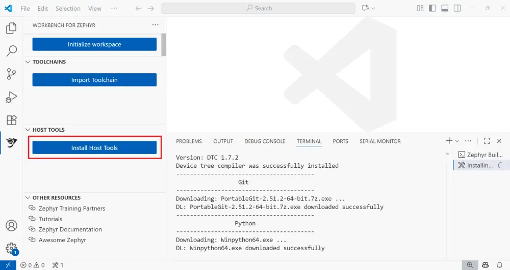
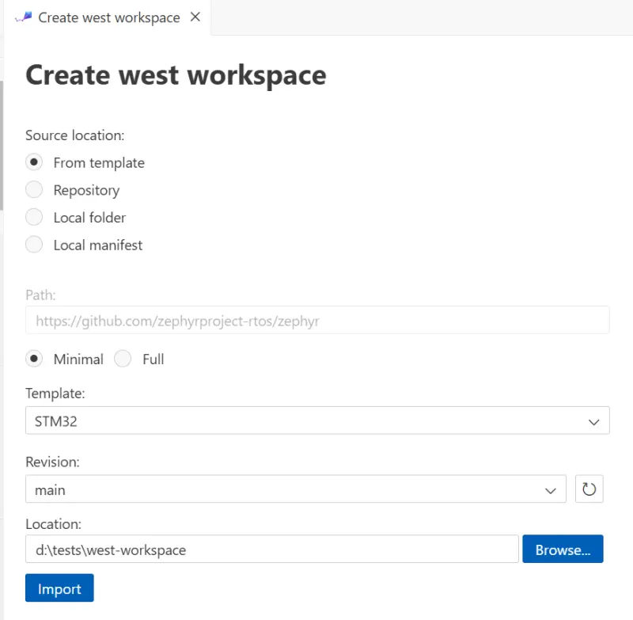
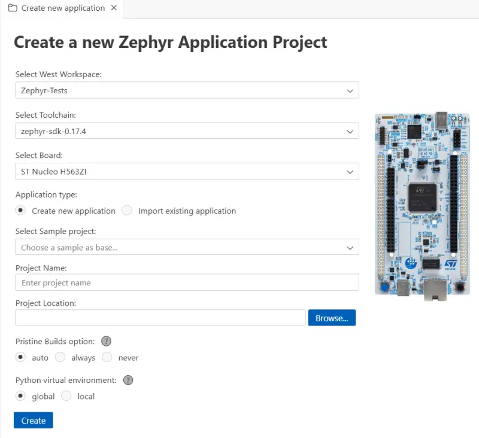
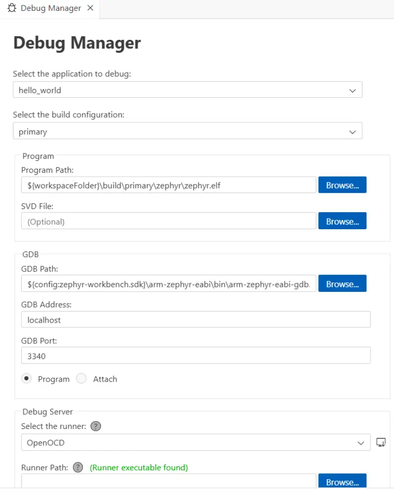

Workbench for Zephyr
Workbench for Zephyr 是 Ac6 推出的一款 Visual Studio Code（VS Code）扩展，为 Zephyr 开发提供支持，包括 SDK 管理、项目创建向导、构建/烧录 和 调试。
完整的操作演示请参阅 Getting started tutorial。
主要特性
安装原生主机工具（Python、CMake 等）
安装和指定工具链（Zephyr SDK、IAR 等）
导入 West 工作区
创建和导入 Zephyr 应用程序
构建和烧录应用程序
调试应用程序
自动安装运行器
进行内存分析和静态分析
兼容性
Windows 10-11
Linux（x86_64）
Ubuntu
Debian
Fedora
其他发行版可能也能使用（未经测试）
macOS
入门
安装扩展
从 VS Code Marketplace 安装 Workbench for Zephyr。
打开 Workbench for Zephyr 扩展
在活动栏中点击 Workbench for Zephyr 图标。
安装主机工具
点击 Install Host Tools，下载并安装原生工具（通常安装到
${HOME}/.zinstaller）。
备注
某些主机工具可能需要管理员权限。在 Windows 上，安装 7z 时需要管理员权限。在 Linux 上，使用软件包管理器安装工具时（例如运行 apt install）需要管理员权限。
导入工具链
点击 Import Toolchain，选择一个工具链，并选择目标文件夹。
工具链提供构建和调试 Zephyr 应用程序所需的编译器和调试器。推荐使用 Zephyr SDK，可以安装完整软件包，也可以安装面向特定目标的精简版本。Workbench 也支持 IAR 等其他工具链。
初始化/导入 West 工作区
点击 Initialize workspace 并填写工作区信息。

Workbench 会创建工作区，并解析 west 清单以配置项目。
创建新应用程序
在 Workbench for Zephyr 中，新项目基于 Zephyr 源码中的示例创建。
点击 Create New Application。
选择要关联的 West Workspace。
选择要使用的 Zephyr SDK。
选择目标 Board（例如
ST STM32F4 Discovery）。选择作为基础的 Sample 项目（例如
hello_world）。输入项目名称。
输入项目位置。

构建应用程序
点击状态栏中的 Build，或选择要构建的应用程序文件夹。构建输出显示在集成终端中。
配置并运行调试会话
使用 Debug Manager 生成/更新调试配置（
.vscode/launch.json）：生成的 ELF（Program Path）
SVD 文件（可选）
GDB/端口/地址（如有需要）
调试服务器/运行器（OpenOCD、J-Link、LinkServer、pyOCD 等）

然后通过 Run and Debug 正常开始调试


安装运行器
Workbench for Zephyr 可以为某些运行器（例如 OpenOCD 和 STM32CubeProgrammer）提供安装程序。使用 Install Runners 查看支持的工具并进行安装（或打开厂商网站）。
实用链接
可以浏览 Extension repository
更多详细信息，请查看 Full documentation